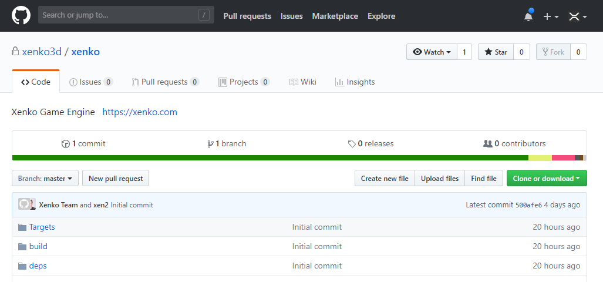

Xenko 3.0 release notes
August 2, 2018
Highlights
Xenko is now a MIT community-based opensource project!
You read that right. Xenko 3.0 is out now, released under the permissive MIT License.
From now on, you can use and modify Xenko completely free — whether you're a professional, a student, or just looking for a new hobby. This includes the runtime and editor.

Silicon Studio no longer supports Xenko, but members of the Xenko team will continue to work on it as part of the community.
We encourage people to help us and contribute to the project. If interested, join us on GitHub.
We are really excited to see what people will come up with!
Thanks for supporting Xenko!
New project system
Both Xenko itself and users project are now built on top of the new project system.
It means your game csproj are now simpler as ever, with only a PackageReference to Xenko.
This makes package restore, upgrade and selection much more convenient. Opening a project with a non-installed version of Xenko should work out of the box too, as long as Xenko launcher is installed.
Longer down the road, the plan is to split Xenko further into separate packages such as Xenko.Graphics, Xenko.Physics and Xenko.Editor (and possibly host them directly on nuget.org).
Video
It is now possible to add video to your games.
Note that this feature is not completely tested and supported on all platforms, but we decided to include it anyway and tune it later to not delay the MIT release further.
Skin and Hair rendering
Skin and hair rendering are now possible with Xenko.
Skin rendering is based on subsurface scattering, and hair rendering is based on Kajiya-Kay and Scheuermann models.
Same as video, this feature might still need some improvements and tuning, but we decided to not delay the MIT release further.
Breaking changes
Xenko namespace changes
Lot of namespace changes to decouple the namespace from SiliconStudio:
SiliconStudio.XenkorenamedXenkoSiliconStudio.CoreandSiliconStudio.*renamedXenko.Core
Projects should automatically be updated, but we recommend you making a backup of your project before, and double check everything is good after the upgrade.
New project system
Game project will be recreated with the new project system.
This should happen automatically but you might need a few tweaks afterwise (i.e. readjust Build Action on certain csproj items).
Changelog
Android
- Fix calls to OnPause and OnResume when the application is put on background/foreground.
- Fix regex used to check version of android ndk.
Android.Tests
- Fix crash when launching test activity from test launcher.
Animation
- Add the possibility to import animation curves of custom attributes present in FBXs.
AssemblyProcessor
- Generate serialization code directly with Cecil
- Look into interfaces contained in base classes when generating ListUpdateRevolver registration code.
- Removed iOS workarounds (calli generics and unbox)
- Support PinnedType
- Use ILRepack from NuGet
AssetCompiler
- Install target redirect on first build, and improve path detection
- Show URL of asset in case of exceptions in Command
Assets
- Add the possibility to not to merge meshes of a model without skeleton to benefit of culling.
- Add the possibility to use a model without animation as reference of a diff animation clip.
- Automatically track source code changes (DefaultItems)
- Factorize SoundAssetCompiler for future use (video)
- Fixed Assets.Tests nuget packages/app.config
- Introduce `IAssetWithSource` interface to unify `AssetWithSource` with other kind of assets having a source (e.g. `ModelAsset`).
- Move Sound asset classes into `Media` namespace
- Package upgrader for BackgroundComponent.Is2D
- Sound: Use ShellHelper to call ffmpeg
Assets.Compiler
- Reorganized remote builder in Assets.CompilerApp rather than BuildEngine.Common
Assets.Editor
- Remove deleted resx from csproj
Assets.Model
- Added mechanism to customize models during asset compilation.
Audio
- Various improvements (courtesy of Pierre and Jonathan)
Audio.Tests
- Temporarily remove 4 channels sounds (fails with ffmpeg)
- Test not compiling since SoundPlayState => PlayState renaming
Audio/Video
- Detect FFMpeg errors
Build
- Add explicit TargetFramework to project files
- Added DataMemberIgnore on LocalReflections.DebugModes to avoid serialization mismatch
- Added props/targets redirection for NuGet consumption
- Added System.ValueTuple (temporary fix until we switch to PackageReference for Xenko itself)
- Bumped Windows 10 SDK to 10.0.16299.0
- Change explicit TargetFrameworkVersions to TargetFramework
- Convert to PackageReference
- Define the TargetFramework for tooling assemblies
- Delete all packages.config and includes
- Disable native build during design-time build
- Explicitly include Microsoft.NET.Sdk props/targets for a few more projects that were not compiling correctly
- Explicitly include Microsoft.NET.Sdk props/targets to be able to override some values
- Fill list of files to cleanup only when running the clean target
- Fix compilation of shader related projects
- Fix CoreCLR build
- Fix language targets for WPF projects
- Fix OutputPath
- Fix package build
- Fix skybox not working with compressed cubemaps.
- Fix some project builds
- Fixed incremental build (still not perfect, waiting for more info on https://github.com/dotnet/project-system/issues/3157)
- Fixed unit test and package builds
- If SiliconStudioCompilerTargetsEnable is set to false, override LanguageTargets to an empty one
- Include *.cs files that are not in the project directory
- List resource folders explicitly in .xkpkg
- Make Xenko Native .cpp/.h file globbing faster by ignoring obj/bin folders
- More cleanup
- Moved sources from sources/common subdirectory to sources so that everything is at the same level
- Override SiliconStudioXenkoOutputPath even if set
- Remove *.CSharp.targets imports
- Remove default comments
- Remove many unnecesssary properties
- Remove Microsoft.Common.props imports
- Remove most attributes from AssemblyInfo.cs
- Remove obsolete files
- Remove references to default framework assemblies
- Remove some redundant Compile item updates
- Remove ToolsVersions
- Remove unnecessary *.cs file includes
- Remove unnecessary xml directives
- Removed CoreFX
- Removed LZMA compression (better to be directly supported at NuGet level?)
- Removed SiliconStudio.Presentation.SampleApp (not used)
- Removed unused SharpDiff
- Removed unused SharpDX.Mathematics from deps (using NuGet version already)
- Removed unused SQLite
- Revert samples to not use new csproj system for now
- Revert unit tests to old system for now
- Run AssemblyProcessor right before assembly is copied rather than during CoreCompile (which happens during Visual Studio loading)
- Setup proper AssemblyName for packageinstall assemblies
- Setup target for cpp (respecting SiliconStudioCompilerTargetsEnable)
- SiliconStudioXenkoReplaceVersionInfo target was not working properly with new build system
- Simplify ProjectReferences
- Switch to new csproj system for games
- Switch to nuget version for Mono.Options
- Switch to nuget version for Mono.TextTemplating
- Tests projects now have a Service in csproj with latest VS update
- Update *.cs files with additional properties, instead of including
- Update .gitignore for launchSettings.json
- Update build instructions
- Update embedded resources instead of including
- Update project file headers
- Updated LLVM to 5.0.1 (avoid some issues with "terminate" missing symbol on UWP, which should resolve to std::terminate)
- Updated THIRD PARTY.md to reflect usage of DocFX rather than SharpDoc
- Upgrade to new csproj format
- Use MSBuild 15.5 from MyGet
- Use Windows SDK v10.0 instead of v8.1 for d3dcompiler_47.dll
- Various improvements/fixes for the new project system
- Workaround for https://github.com/xamarin/xamarin-android/issues/1235 (Android resources not being properly merged in incremental build)
- Workaround for solution dependencies with incomptable frameworks: https://github.com/Microsoft/msbuild/issues/2661#issuecomment-338808156
BuildEngine
- Tests: fix build since SlaveBuilderPath has been removed
Cecil
- Protect against null reference exception when there is no yields in async method
- Update to latest Cecil + ILRepack
Core
- Remove unnecessary constraint on generic parameters of extension methods `DisposeBy` and `RemoveDisposeBy`.
Core.Tests
- Disable when building with CoreCLR or if SiliconStudioSkipUnitTests is set
- Fixed csproj so that it properly builds
CrashReport
- Turned into a shared project
Deps
- Removed unused lzma.exe
- Removed unused NuGet libraries (using PackageReference instead)
- Update checkout scripts.
- Update version of ffmpeg to from 3.3 to 3.4.
Editor
- Change editor build directory to project Cache directory even in Dev mode. Remove fallback folder property from the settings (misleading).
- correct lens flare display attribute
- FindTemplates according to current session (or default package if no session loaded)
- Fix NullReference crash when asset is mising the DisplayAttribute.
- Update localization files.
- Update localization files. Also updated some comments.
- Updated to CodeAnalysis 2.4.0 and RoslynPad 1.0.4 (from NuGet)
Engine
- Add a flag to be able to force the engine to update the animation evaluator cache (useful when updating clip channel values at runtime).
- Add getter to AnimationProcessor in order to be able to access AnimationClipResult.
- Added texture projection to light spots (courtesy of Mirsad)
- AnimationBlender: Implement blending for type Float1.
- Change log level of ffmpeg to `fatal`. `error` level can display recoverable errors.
- Clamping the normal.z value to (0, 1) to prevent NaN result from sqrt().
- Code cleanup.
- Delay the initialization of the shader parsers to first usage instead of first shader loaded (significantly reduce the load time in case no shader need to be compiled).
- Fix LightShafts with shadowmap transmittance
- Fix several crashes and multi-threading issues happening when modelNodeLinkComponents is targeting a model not in its parent hierarchy.
- Implement interface ICollectorHolder in ScriptComponent to be able to automatically dispose objects during the script Cancel method.
- Minor cleanup
- Move ModelNodeLinkProcessor before TransformProcessor to avoid to have the first frame where the transformation is not updated.
- NotNull and cosmetic improvements
- Removed some unused code/files
- Return the created PlayingAnimations when adding a new AnimationClip for convenience and consistency with other play functions.
- Streaming: Added a new DoNotStream option
- Support moving entity inside scene
- UpdateEngine: look for member updater coming from base classes before falling back on custom resolver.
ExecServer
- Remove LoaderOptimization.MultiDomain
FBX
- Switch to FBX SDK 2018.1.1
FBX.Importer
- Optimize calculation of Quaternion from XYZ rotation keyframe.
Game
- Add the possibility to render the splash screen as a double view for VR games.
GameStudio
- Remove expiration
General
- Removed bunch of unused files and fixed some license headers
Graphics
- Add support for panorama 2D textures to skybox asset.
- Add ViewDimension property on Texture. Adjust code accordingly so that the engine behaves properly on View textures.
- Added a cast in SubsurfaceScatteringBlur.cs.
- Added a check to see if the MaterialIndices buffer is used before overwriting "allTargets[1]".
- Added a comment in MaterialHairLightAttenuationFunctionDirectional.xksl.
- Added a comment.
- Added a first version of the MeshHairRenderStageSelector class.
- Added an exception.
- Added comments.
- Added NotNull
- Added PCF for SSS thickness. Refactored the PCF code. Renamed "CalculateThickness()" to "FilterThickness()".
- Added some casts to fix shader errors.
- Added support for cavity & occlusion maps in the hair shading model.
- Added support for choosing which normals to use for the directional light attenuation for hair. Moved a computation from the GPU to the CPU.
- Added support for configuring the scattering kernel parameters. Refactored the scattering kernel generation.
- Added support for fake shadowing.
- Added support for per-material scattering kernels and scattering profiles.
- Added support for resizing the material array for the SSSS post process. Refactored the code.
- Added support for up to 256 scattering kernels in the SSS post-process by storing the kernels in a buffer.
- Added the missing multiplication by the diffuse color for the scattering.
- Added two editor-tunable (not yet integrated) parameters for the SSS transmittance.
- Baked a calculation into the SSS scattering kernel so it doesn't have to be executed in the post-process.
- Based the SSS shading model on the diffuse lambert one instead of the CelShading one. Removed redundant files.
- Cleaned up some spotlight code.
- Cleaned up the "SubsurfaceScatteringBlur" class.
- Cleaned up the SSS transmittance profile and scattering kernel generation code.
- Cleaned up the SSSS post-process shader.
- Correctly integrated the depth-stencil resolve for hair and transparent objects.
- Defined default values for properties and simplified the code.
- Fed the proper NdotL term into certain functions. Little refactoring. Applied shadows to the specular reflections.
- Finalized the indirect specular hair lighting for now.
- Fix 2D texture skybox shader compilation crash with graphics API level < 10
- Fix D3D12 build
- Fixed a bug causing the shadow map offset to be calculated incorrectly for certain light directions.
- Fixed a bug causing the shadow map pixel thickness streams variable not to be set.
- Fixed a bug in the SSS post-process which caused the scattering kernel to become distorted in non-square viewports.
- Fixed a bug inside of ShadowMapReceiverSpot.xksl.
- Fixed a bug which caused NaN with the Scheuermann approximation shading mode. Cleaned up and commented the hair shaders.
- Fixed a copy-paste error.
- Fixed a Mizuchi bug in the indirect hair lighting.
- Fixed back face rendering for opaque hair geometry. Removed debug code. Refactored the hair-specific code in MeshPipelineProcessor.
- Fixed new, minor shader compilation errors.
- Fixed some SSS thickness calculation artifacts by supply the correct, world space normals instead of object space normals.
- Fixed some stuff in the hair rendering code and cleaned it up.
- Fixed SSS thickness calculation for spotlights.
- Fixed the bug which causes the thickness to fade to 1.0 and not 0.0 at the border of shadow maps.
- Fixed the cavity map integration for the hair shading and removed the obsolete cavity parameter.
- Fixed the incorrect force to renderbuffer for all FBO attachments. Refactored the code.
- Fixed the issue with the constant buffers + mixins that are included multiple times per hair shader. Refactored the hair rendering code.
- Further cleaned up the SSSS shaders.
- Got rid of the circular dependency between SubsurfaceScatteringBlur and SubsurfaceScatteringRenderFeature.
- Hid the "Enabled" property of the MSAAResolver in a safer way.
- Implemented "FilterThickness()" for lights without PCF shadows.
- Implemented a debug mode for the hair shading.
- Implemented a list to choose different types of scattering profiles from for SSS (WIP).
- Implemented a more accurate offset for the SSS thickness filtering to greatly reduce the artifacts around object edges.
- Implemented a new extension point in "MaterialSurfaceLightingAndShading" and "IMaterialSurfaceShading".
- Implemented a PipelineProcessor for hair and disabled the hair-specific code in MeshPipelineProcessor.
- Implemented cascade blending for the thickness calculation using directional shadow maps.
- Implemented deduplication for the scattering parameter array in the SubsurfaceScatteringRenderFeature to save space in the array. Refactored the code.
- Implemented force-disable of MSAA on iOS, so it compiles.
- Implemented MSAA for Desktop OpenGL. Fixed the MSAAResolver serialization.
- Implemented MSAA for OpenGL ES. Simplified and optimized some OpenGL code.
- Implemented new diffuse and specular shading models for the hair based on the default shading model implementations.
- Implemented preliminary in-shader scattering profile generation and precomputed scattering profile support.
- Implemented proper support for fake shadowing, shadowing and scattering. Some refactoring. Combined duplicate code. Added more parameters. Moved some range checks to CPU.
- Implemented scattering strength writing to alpha channel, so the post-process can sample it.
- Implemented scattering support for point lights and improved other thickness calculation things.
- Implemented support for changing the hair shading model. Refactored the shaders. Temporarily disabled support for noise textures. Replaced "Texture" properties with "IComputeColor". Updated userdocs and summaries.
- Implemented support for changing the render mode of the SSS post-process from within the editor.
- Implemented support for orthographic and perspective projections for SSS. Got rid of the "DepthFalloffStrength" parameter.
- Implemented support for SSS strength maps.
- Implemented the "SubsurfaceScatteringSettings" class and hardcoded the sample count for now. Integrated it into the dependent classes.
- Implemented the first version of the SSS transmittance lighting as a new shading model.
- Implemented the new streams variable "meshNormalWS" and integrated it in the hair shading and SSS.
- Implemented the Separable Subsurface Scattering post process as a new ImageEffect.
- Implemented the SSSS strength map using ComputeColor for more artistic freedom and proper mip map selection.
- Implemented two new parameters for controlling the specular noise textures for hair shading. Commented out unused code.
- Improved the jittering in the SSSS post-process shader and refactored it a little.
- Improved the SSS material array and index generation for the post-process.
- Improved the SSS thickness filtering artifacts by calculating a better normal offset.
- Included the MeshHairRenderStageSelector class in the project.
- Increased the allowed number of digits for the hair specular strength to three.
- Integrated correct, world space normals for the SSS transmittance calculation.
- Integrated optional kernel size jittering to break the banding artifacts. Improved the rotation randomization. Removed some obsolete code.
- Integrated screen space scattering kernel generation. Replaced the "Quality" parameter with "SampleCount".
- Integrated support for generating a subsurface scattering material index buffer that is consumed by the SSSS post process.
- Integrated the editor-tunable parameters for the shading model. Implemented transmittance support for PCF shadows.
- Little code simplification.
- Little refactoring in the specular hair model feature.
- Made "SpriteBase.xksl" always write zero to all render targets in order to prevent uninitialized framebuffer regions (to prevent having an SSS material index in the sky).
- Made all the materials write to the SSS material index buffer.
- Made it possible to enable/disable the SSS material deduplication. Cleaned up and commented code.
- Made multisampling get disabled when OpenGL ES 2 is being used. Added logging for adjustments of the multisampling level.
- Made the opaque hair geometry render using the "Opaque" RenderStage and removed the "HairOpaque" RenderStage from ForwardRenderer.
- Made the specular hair lighting get attenuated by alpha, so transparent regions don't exhibit specular reflections.
- Made the SSS post-process get skipped if no scattering materials are visible.
- Made the SSSS post-process work accurately for non-square viewports too. Refactored the code. Disabled the debug shader code. Fixed the inverted clip space coordinates.
- Made the Transparency material feature get ignored if hair shading is on to prevent issues.
- Minor refactoring in the hair code.
- Moved SSS mixins to a subfolder.
- Moved the "MaterialHairSurfaceData" structure to the specular hair shader because it's only needed there now. Renamed "MaterialHairSurfaceData.xksl" to "MaterialHairShared.xksl".
- Moved the angle conversion to the CPU side.
- Moved the definition of the screen space scattering kernel (for SSSS) out of the shader.
- Moved the hair shader mixin code files to the correct subfolders. Renamed some shaders and classes.
- Moved the hair shader mixin code into subfolders for better overview.
- Moved the SSSS post processing code to the correct folder within the project.
- OpenGL: Fix regression where depth textures used as SRV were created as render buffers rather than textures.
- Ported and integrated most of the Mizuchi diffuse and specular hair shading functions. Implemented editor parameters.
- Readded missing SpriteBatch.bytecodeSRgb.Vulkan.Level_9_1.cs
- Refactored fake shadowing into a drop down option with accompanying parameters. Removed obsolete code.
- Refactored hair direction (tangent/bitangent) and shadowing/scattering options into drop down options with accompanying parameters. Removed obsolete code.
- Refactored the code.
- Refactored the hair rendering code. Adjusted properties. Implemented "GetHashCode()" for all hair classes. Removed obsolete code. Replaced float4 with float3 in shaders.
- Refactored the hair shaders. Implemented overrides for PrepareForLightingAndShading and integrated support for noise maps using ComputeColor.
- Refactored the HairRenderFeature class. Multithreaded some code.
- Refactored the simplified the MSAAResolver class. Made the MSAAResolver stay always on to get rid of redundant code and to make the editor settings more obvious.
- Refactored the SSS thickness calculation shader code.
- Refactored the SSSS material array generation, so the material array gets allocated only once at startup and from then on gets modified only.
- Refactoring and cleanup. Removed duplicate and redundant code.
- Refactoring. Got rid of duplicate code. Slightly changed the environmental lighting. Implemented the option for the shading model using an enum.
- Reimplemented the hair "tag" as a ParameterKey so hair meshes can get filtered out correctly. Updated the RenderStageSelectors.
- Reimplemented the hair rendering using the new multipass feature. Fixed some hair shading issues. Reimplemented the specular environmental lighting using IMaterialSpecularMicrofacetEnvironmentFunction.
- Reimplemented the SSS as a separate material feature. Removed obsolete material parameters.
- Remove unused built-in shader bytecode
- Removed a commented out line of debug code.
- Removed a project include.
- Removed an obsolete line of code.
- Removed dead code.
- Removed obsolete code from "MaterialSurfaceShadingDiffuseHair.xksl".
- Removed obsolete hair render stages from "ForwardRenderer".
- Removed obsolete hair rendering code.
- Removed obsolete shader code. Updated comments. Moved the "AfterLightingAndShading()" shader extension point.
- Removed redundant hair shading code.
- Removed some obsolete code from "MaterialSurfaceShadingSpecularHair.xksl".
- Removed the "MaterialSurfaceShadingSharedHairKeys" class and replaced its "IsHair" parameter with "PassID".
- Removed the "override" keyword from "FilterThickness()".
- Removed the manual PCF thickness filtering code after confirming that there's no visual difference compared to taking one interpolated sample.
- Removed the obsolete Fresnel, Visibility and Distribution mixins & properties from the hair model feature.
- Removed the scattering kernel parameters from Material.cs and stored them using material parameters instead. Some refactoring & bugfixing.
- Removed unused includes from the cel shading shaders and removed duplicate code.
- Removed unused parameters from "LightDirectionalShadowMapRenderer.cs".
- Removed unused parameters from "LightSpotShadowMapRenderer.cs".
- Renamed "MaterialHairLightAttenuationFunctionDefault" to "MaterialHairLightAttenuationFunctionDirectional".
- Renamed a parameter of the SSSS post process.
- Renamed some SSS classes and shaders. Changed the way the scattering strength map is handled.
- Renamed the property "Fake shadowing function" to "Light attenuation function" and added comments.
- Replaced IComputeColor with IComputeScalar for the hair noise maps.
- Separated out the scattering kernel as an additional setting, independent of of the scattering profile.
- Simplified the code using existing streams variables. Implemented the "UseTangent" setting. Added explanations and numerical ranges for properties.
- Simplified the PCF shadow and thickness code.
- Simplified the shadow map thickness filtering code.
- Specified correct numerical ranges for the SSS shading model parameters and added userdocs and summaries. Made it possible to change SSS parameters without waiting for a shader recompilation.
- Temporarily disabled the "scatteringWidths" array for the SSSS post process. Implemented a discard for materials with a material index of zero.
- Temporary integration of hair rendering using three render passes (opaque, transparent back, transparent front), which exhibits flickering.
- Update source to match new material pass API
- Updated an outdated comment about MSAA support.
- Updated comments in SSS code.
- Updated the SSS "Translucency" default value so it matches the one of the SSSS demo & Mizuchi.
Graphics.Tests
- Bump gold image version (skybox compression changes)
Importer.FBX
- Add support for partial animation of a vectors (use default value instead of 0 for component missing animation curves).
Input
- Add missing keyboard key mapping for Android.
- Android: Fix issue with PointerPressed/Released list being constantly empty (update was performed twice).
- Various fixes for orientation sensor on Android (courtesy of Pierre)
- VirtualButton: add IsDown/Pressed/Released methods. Create VirtualButton.Pointer classes. Make constructors protected so that types can be inherited. Improve code.
Input.Tests
- Fix compilation issues.
Install
- Removed Portable Library from prerequisites
- Removed unused BuildTools_MSBuildNuget.msi
Launcher
- Adapted to support new nuget packages
- Fix self-upgrading since switch to NuGet 4.0
- Fixed with new build system
- Reorganize settings (no more store.config, because we might have Xenko from package install rather than Launcher) and better detection of dev packages on server side
Misc
- Cherry-pick manu/nuget3 branch
- Fixed the Engine project file.
- Resolved the merge conflict on the file "SiliconStudio.Xenko.Engine.csproj".
- Revert "[Build] Override SiliconStudioXenkoOutputPath even if set"
- Revert "[Skin/Hair] Hide Hair/Skin parameters until working properly"
- Updated the year in the copyright notice.
MSBuild
- Improved MSBuild detection to use installed version rather than local nuget copy
- MSBuildLocator: Run it only if MSBuild assemblies not detected (they might be loaded if ran as part of MSBuild)
- Updated from 15.5.180 to 15.6.82
Native
- Compute XenkoNativeOutput.Link only when OutputPath is properly computed (inside a target)
OpenGL
- Fix for "Requested renderbuffer is neither a render target nor a depth/stencil attachment." issue when using post effects of openGL.
Package
- Readded tools folder (needed for packageinstall.exe)
Packages
- Download report and package installer fixed with NuGet 4.0
- Removed potential future namespace collision
- Various improvements to make new nuget system works better
Physics
- Fix crash in physics engine when collider shapes are removed from the scene and unloaded during the same frame.
Prerequisites
- Readd Microsoft.Net.Component.4.6.1.TargetingPack to MSBuild prerequisites
Presentation
- Remove an InvalidCastException in AssetFromFileTemplateGenerator
Preview
- Fix the texture preview in the case the texture has no alpha channel.
Rendering
- Add EyeIndex and EyeCount shader variable information via new GlobalVR shader.
- Add support for panoramic 2D texture as 3D input of BackgroundComponent.
- Add the possibility to select sprite blending mode from the Game Studio.
- Fix black screen rendering issue when post effects are used without VR texture mirroring.
- Improve FastTextRenderer robustness. Reallocate buffer when maximum number of character is exceeded.
- Resource ranges were mixed up with data ones when computing satrt offsets
- Skin: remove declaration of SV_Target* when unused, and use another mechanism to detect if material index MRT is needed
- Temporal AA (Velocity Buffer courtesy of Guus)
Samples
- Fix compilation of the VR sample.
SceneEditor
- Add debug physic shape for infinite planes.
- Do not ignore depth while writing the physics gyzmo.
Scripts
- Removed deadlock between ScriptSourceFileAssetViewModel.DocumentId and UpdateAssetFromSource (can't seem to reproduce XK-5104)
- When creating a script, "do you want to save" dialog didn't do what it was supposed to do
Serialization
- Fixed missing generic info when initializing parent serializer
Shaders
- Explicitly qualify Annotations namespace to avoid future conflicts with Xenko.Core.Annotations namespace.
- Removed glsl-optimizer (causing some issues on Android)
- Removed potential future namespace collision
SharpDX
- Updated to NuGet version 4.0.1
Skin
- Additional changes to work with new MRT system
Skin/Hair
- Added package upgrader for effect log (new generic parameter for directional light shadow caster)
- Compute transmittance is now set in the light shadow parameters
- Hide Hair/Skin parameters until working properly
- Improve package upgrader to work on any xkeffectlog file (instead of just the default one)
Skybox
- Upgrader for SkyboxShaderCubemap renaming in effectlog
Store
- Changed how package paths are detected
Streaming
- Fix crash happening when a texture was simultaneously used as background and video target.
Templates
- Moved ProjectTemplateGeneratorHelper.cs to Xenko.Assets
Tests
- Bumped packages
- Bumped packages & adjusted package upgrader version check
TexTool
- Fix Rescaling of 16bits pixel single channel textures.
UpdateEngine
- Added path resolve for ParameterCollection/ParameterKey
Userdocs
- rename glossiness -> gloss, more natural English
- update skybox asset and background component labels and userdocs
Video
- Added SharpDX.MediaFoundation to UWP projects
- Added support for video rendering (Windows and Android only for now)
- Added Video assembly to unit tests
- Ensure that the video file format is mp4 on windows.
- Fix #ifdef preprocessing instructions in ffmpeg files and make assembly graphics API dependant.
- Keep in sync with feature branch
- Strip away STEREO3D side_data information when present during video compilation on window.
Video/Audio
- Keep in sync with feature branch
VisualStudio
- Fix project references
VR
- Add implementation of Recenter for DummyDevice and OpenVR.
- Follow orientation sensor (courtesy of Pierre)
VSPackage
- Fix vsix build with new csproj system
Yaml.Tests
- Fix unit tests using EmbeddedResources